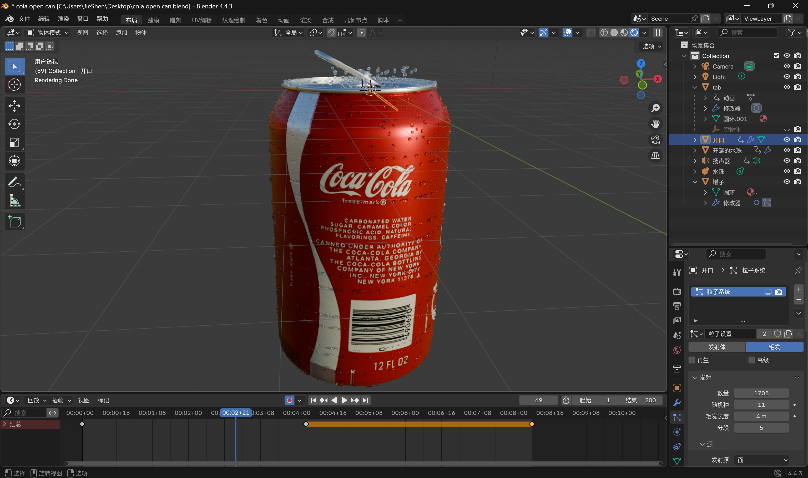
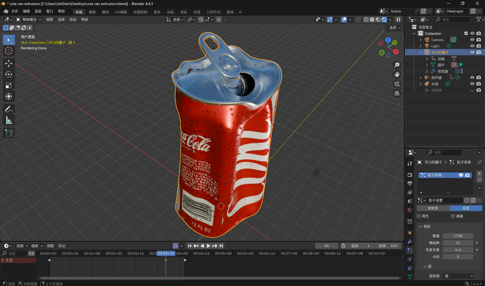
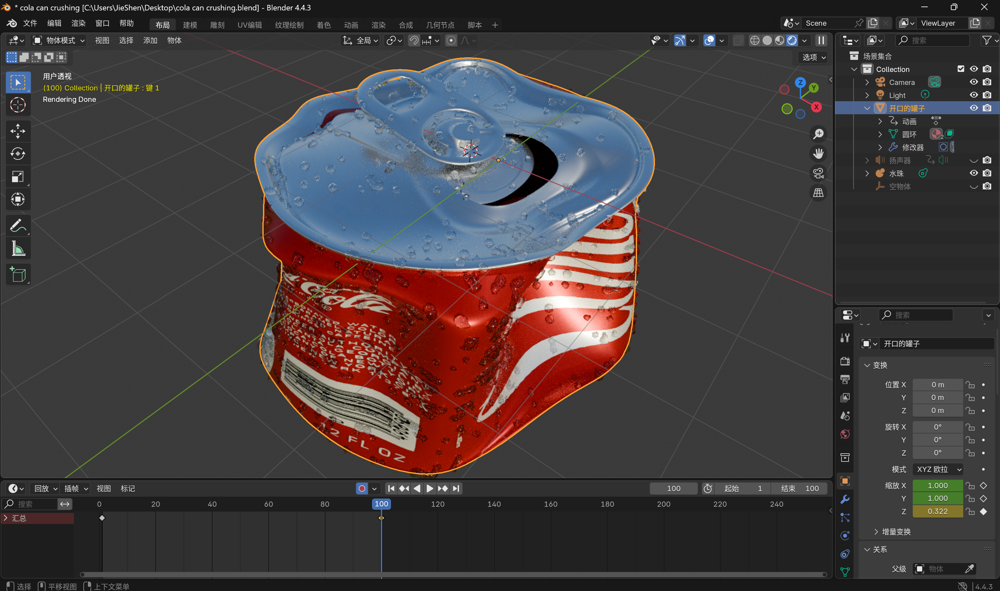
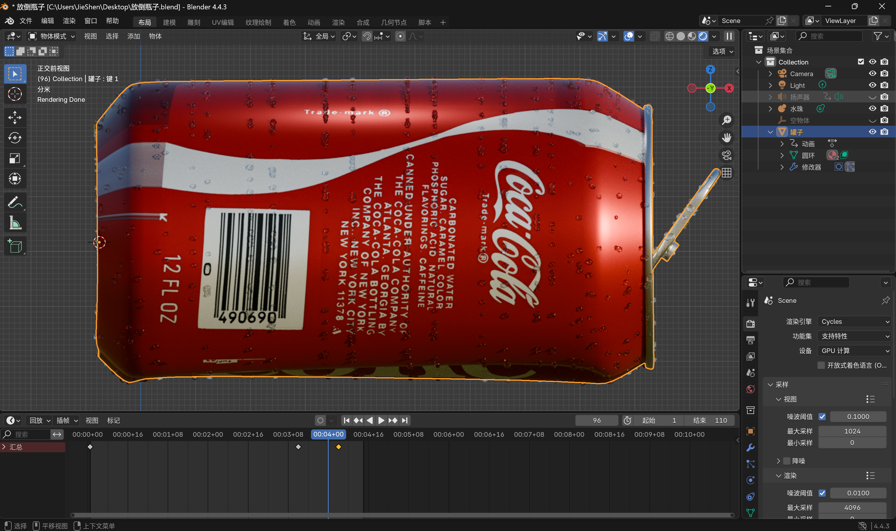
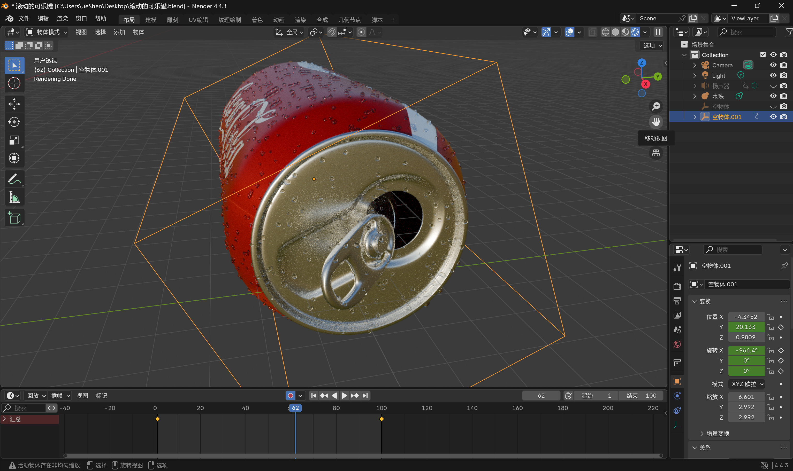

I created a marketing website for the Coca-Cola Company that contains three of the company's products: Coca-Cola, Sprite, and Fanta. I added a 3D model of a can and used animation and sound effects to show how the can opens, flattens, recycles, collapses, and rolls, respectively.
3D models
To create this website, I created a 3D model of a Coke can in Blender. In Blender, I created an opening animation in which the pull ring and tab moved as if the can was being opened. I also created a separate model showing the animation of the can being pinched, recycled, knocked over and rolled.





Design
I placed the can in a bootstrap canvas. I created a navigation bar using bootstrap. I created an interactive design using CSS. I used three.js to illuminate my scene with hemispherical lights and added a light GUI spotlight that allows the user to control the lighting of the can. I used three.js to add the model to the web page. I added buttons to control the jar to open, rotate the 3D model and play pinch, recycle, knockdown and scroll animations, and I added visual effects to these buttons (hover animations and simulated presses) to increase interactivity.
Integration
When I animated the model in blender, I already added its sound effects by adding speakers, so I directly converted the video to MP3 audio by exporting it in MP4 format to synchronise it with the animation when it loads and plays in the web page. I added images to the landing page and resized them using CSS.
Interaction
I added track controls to move the canisters around in the web page. I created a switch button to load a second model into my HTML Bootstrap canvas.
Implementation
I tested the site for functionality to make sure all the links worked.
Deeper Understanding
I followed the experimental video, but replaced the products and the corresponding images and text descriptions according to my ideas, and inserted an advert video for each product that the user could click on and play, as well as making some modifications to the modelling of the products. Updates were also made to the button design, typography, animations and font colours, while I updated the big headings on each page of the layout to match the product. And I added two more animations to the three taught in the lab video (knocking over the jar and rolling the jar), and matched all five animations with the appropriate audio. In addition to this, I added two rendering effects of water droplets randomly attached to the surface of the jar and water droplets bursting out of the jar when it was opened when blender created the 3D model.A 'Reset to Original' button was also added to allow the user to reload the default model when clicked.
Implementation and publication
I added an 'About' page. I have zipped my site and tested that my folder opens in Visual Studio Code after unzipping and works properly.